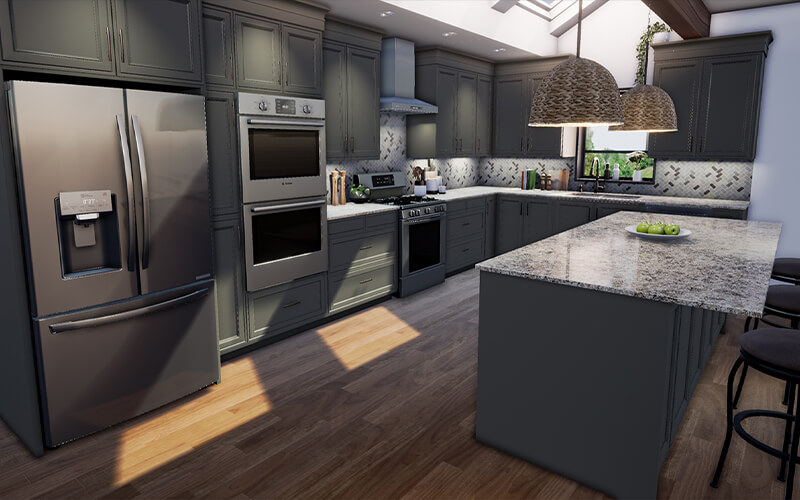
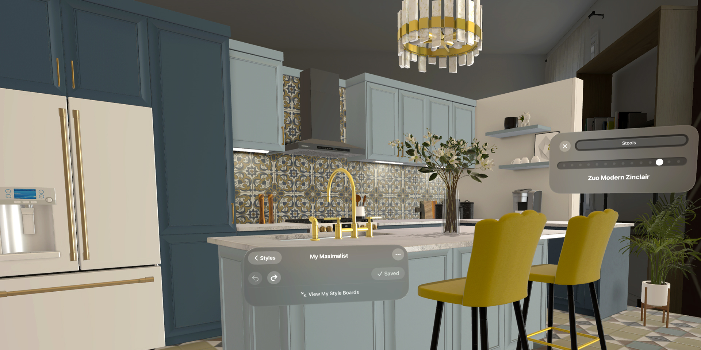
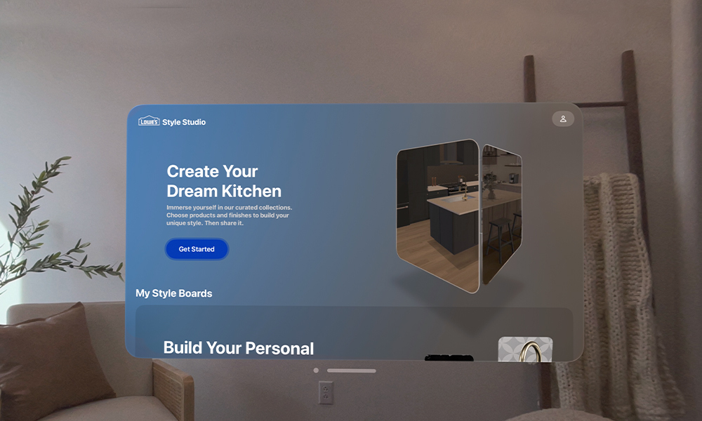
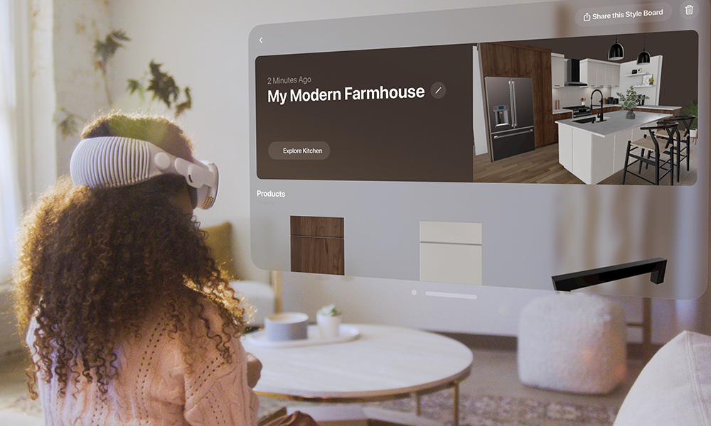

Spatial Commerce
A breakthrough experience for the home improvement industry on Apple Vision Pro
At Lowe's Innovation Labs, we have a history of leveraging groundbreaking technologies to make home improvement projects frictionless and more approachable.
We're taking a major step forward with the introduction of Lowe's Style Studio, a kitchen design experience purpose-built for Apple's Vision Pro.
What it is
Lowe’s Style Studio is the easiest and most immersive way to envision your dream kitchen.
Designed exclusively for Apple Vision Pro, Lowe's Style Studio is an end-to-end visualization experience that makes it easy to bring your unique style to life in minutes.
Explore and find your style with Lowe's Style Studio
Available at launch in the App Store in visionOS, Lowe’s Style Studio gives users an immersive space to experiment and discover their personal style, making the most daunting part of the kitchen remodel process more intuitive and delightful.
Transform your physical surroundings into an immersive kitchen showroom with near infinite possibilities. Quickly audition new colors, finishes, and products with simple gaze-and-tap gestures. Save your favorite combinations and turn them into professional-looking style boards - in a format that can be shared outside of Vision Pro with friends, family members, or designers.

Built in-house by Labs and core members of the Lowe's mobile apps team, Lowe’s Style Studio is the next chapter in nearly a decade of Labs work in spatial computing. It’s all part of our commitment to offer customers better tools and frictionless services, giving them a sense of confidence and delight in home improvement.

Lowe’s Style Studio on Apple Vision Pro is like no other home improvement experience. It will help people better understand their individual style, imagine new possibilities, and ultimately, discover the best products and services for their next kitchen.
How it works
Lowe's Style Studio offers a new level of immersive, intuitive visualization
Today, whether you're refreshing, redesigning or remodeling your kitchen, chances are you're poring through thousands of images online or flat 2D renderings, trying to finalize your vision.
With Lowe's Style Studio, however, you'll step into a 3D kitchen scene where you can see, explore, and experiment in ways that otherwise weren't really possible until now.
Thanks to the intuitive input and gesture system of visionOS, which is controlled by your eyes and hands, Lowe’s Style Studio gives you the unprecedented ability to bring your projects to life with ease.
Start by exploring preset styles curated by Lowe’s professional designers and then start customizing by swapping in and out hundreds of real-world materials, fixtures, and appliances – all available at Lowe’s stores and on Lowes.com – to fit your personal taste. With nearly 80 billion possible combinations, every customer can create a kitchen inspiration that’s uniquely their own.
After you realize your ideal kitchen design, your preferences are transformed into style boards, which can be seamlessly shared with family members, friends, or designers via AirDrop, email or text.
Innovations like Lowe’s Style Studio do not happen overnight – they emerge after years of customer-focused exploration. We’ve been on a decade-long journey of experimentation, customer research and disciplined product development. We’re excited to apply these learnings into next generation home improvement experiences for our customers.
Lowe's Style Studio will be available on the Vision Pro App Store starting Feb. 2, 2024.